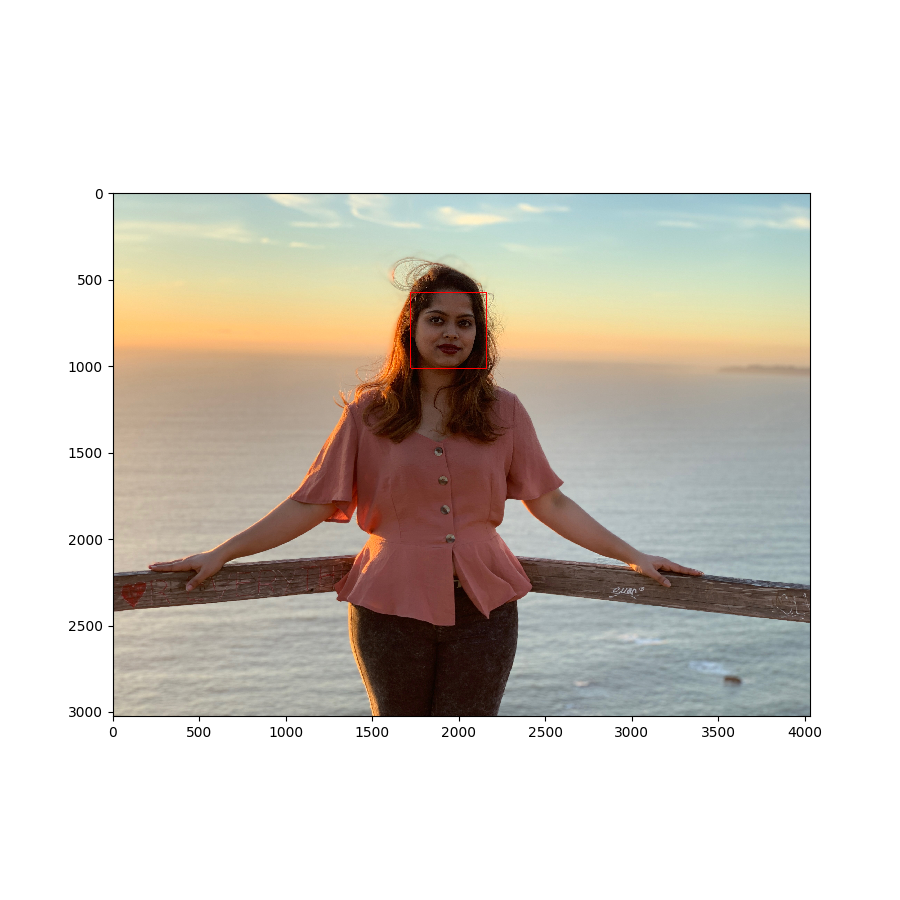
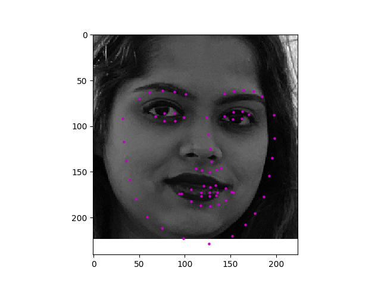

Facial Keypoint Detection
Created CNN to detect facial key points on eyes, nose and mouth using image processing and deep learning
Project Outline:
Combining the knowledge of Computer Vision techniques and deep learning architectures, the aim of this project was to build a facial keypoint detection system. This system takes in any image with faces and predicts the location of 68 distinguishing keypoints on each face. This system can be used in many applications like facial tracking, facial pose recognition, facial filters and emotion recognition.
 Methodology
The code initially detects faces in an image and then predicts the locations of facial keypoints on each face.The project is divided into three steps. The first step is to load and visualize the facial keypoint data provided by udacity. The second step is to define and train a Convolutional Neural Network(CNN) to predict the facial keypoints. The CNN defined takes images as inputs and gives keypoints as output. The CNN was trained on the training data while tracking the loss.Finally, it was checked how the CNN performs on the test data. The final step was to apply this neural network on faces. In this step, the code detects all the faces in an image using Haar Cascade face detector.The images are initially pre-processed so that they are grayscale and transformed into a tensor of input size that the network expects. Finally, the trained model is used to detect facial keypoints on the images.
Results:
As you can see in the above images the CNN sucessfully detects faces and places keypoints on the face.